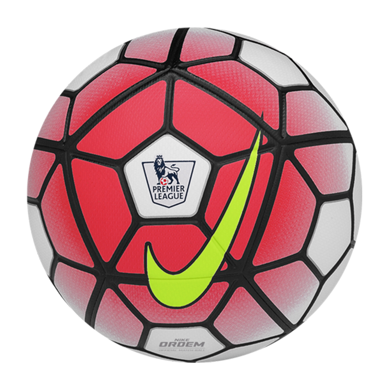

Watch Lionel Messi's astonishing ball control in Argentina's 1-1 draw with Paraguay as he blasts ref after VAR heartache
2020.11.18 15:17
Jump directly to the content The Sun, A News UK Company Close
Your Sun
Sign inEditions
US Edition Scottish Sun Irish Sun Sun Bingo Dream TeamNews Corp is a network of leading companies in the worlds of diversified media, news, education, and information services.
Follow The Sun
The Sun
The Scottish Sun The Irish Sun Dream Team Sun Bingo Hols from £9.50 Superdays Sun Savers Sun GiftsNews Corp
WSJ.com New York Post The Australian News.com.au Storyful Harper Collins Realtor.com talkSPORT Times Money MentorServices
Sign Up To The Sun About Us Editorial Complaints Clarifications and Corrections News Licensing Advertising Contact Us Commissioning Terms Help Hub Topic A-Z Cookie Settings Contact Preferences TOP Sign in UK Edition US Edition Scottish Sun Irish Sun Sun Bingo Dream Team Search Home Covid-19 Football TV Showbiz Fabulous Sport News Money Dear Deidre Tech Travel Motors Puzzles Sun Bingo Sun Vouchers Sun Win Topics A-Z All Football All Football Transfer News Premier League Champions League Championship EFL WSL TOUCH OF CLASSWatch Lionel Messi’s astonishing ball control in Argentina’s 1-1 draw with Paraguay as he blasts ref after VAR heartache
Richard Forrester 13 Nov 2020, 10:01 Updated : 13 Nov 2020, 10:27LIONEL MESSI showed his brilliance once again with a sensational piece of ball control in Argentina's 1-1 draw with Paraguay.
The Barcelona superstar proved age is just a number as the 33-year-old showed amazing flexibility to pluck the ball out of the sky.
This ball control from Messi üî• pic.twitter.com/dl5wJQDgsg
MessiTeam (@Lionel10Team) November 13, 2020 3 Lionel Messi showed brilliant acrobatics to control the ball Credit: EPAAs he lurked on the edge of the box, a cross to him appeared overhit as the hosts attempted to mount an attack.
But Messi leaped off the ground, stretched out his left leg, and took the ball under his control.
It was a frustrating night for the star-studded side and for Messi in particular.
He thought he had bagged a winner for his country before it was controversially overturned through VAR.
Over 30 seconds after Angel Romero lost the ball inside his own half, Argentina went up the other end with Messi finishing off a brilliant passing move.
But the referee went to the VAR monitor and adjudged the Paraguay ace was fouled in the build-up.
According to Sport , fuming Messi went over to the referee and shouted: You screwed us twice.
The other incident was in relation to Paraguay's opener when the referee pointed to the penalty spot after Martinez Quarta fouled Miguel Almiron.
3 VAR ruled out Lionel Messi's winning goal Credit: Getty Images - Getty 3 Messi was left furious with the officials after the contest Credit: ReutersMost read in Football
VideoLOST HIS ED
Watch as Cavani gets red card for Richarlison stamp in Uruguay loss to BrazilPILLOW TALK
Wags who say too much about their footballer's sex secrets, like Icardi & Vardy ExclusiveNO BAL GAMES
Mario Balotelli held talks with Barnsley as Championship strugglers fight dropCRAWLING BACK
I'm A Celeb's Mark Wright plays for Crawley as talk of turning pro continues PicturedMIND WANDAS
Icardi's stunning wife Wanda Nara leaves little to imagination on InstagramBELLE OF THE BAUBLE
Thiago Silva's wife puts up spectacular Xmas display while star's awayRomero buried the penalty to put the visitors ahead but they were pegged back four minutes before half-time when Nicolas Gonzalez headed home Giovani Lo Celso's cross.
After the contest Nicolas Otamendi said of Argentina's luck: I think in the first half we were a bit uncomfortable with the pressure but when we managed to pass the ball about and find spaces we spent almost the entire second period in their half of the field.
We got the goal but unfortunately it didn't stand.
DREAM TEAM SELECTOR
WIN your share of a huge jackpot by simply picking one winning Premier League team each Gameweek.
But here’s the twist: you can only pick each team once!
Click HERE to play Dream Team Selector.
Watch Messi and his kids play football with HUGE pet dog Hulk as wife Antonela drinks Barcelona star's special beer Topics Argentina Barcelona Lionel Messi Comments are subject to our community guidelines, which can be viewed here .More from The Sun
VideoLOST HIS ED
Watch as Cavani gets red card for Richarlison stamp in Uruguay loss to Brazil
0 CommentsPILLOW TALK
Wags who say too much about their footballer's sex secrets, like Icardi & Vardy
0 Comments ExclusiveNO BAL GAMES
Mario Balotelli held talks with Barnsley as Championship strugglers fight drop
0 CommentsCRAWLING BACK
I'm A Celeb's Mark Wright plays for Crawley as talk of turning pro continues
0 Comments PicturedMIND WANDAS
Icardi's stunning wife Wanda Nara leaves little to imagination on Instagram
0 CommentsFollow The Sun
Services
Sign Up To The Sun About Us Editorial Complaints Clarifications and Corrections News Licensing Advertising Contact Us Commissioning Terms Help Hub Topic A-Z Cookie Settings Contact Preferences©News Group Newspapers Limited in England No. 679215 Registered office: 1 London Bridge Street, London, SE1 9GF. "The Sun", "Sun", "Sun Online" are registered trademarks or trade names of News Group Newspapers Limited. This service is provided on News Group Newspapers' Limited's Standard Terms and Conditions in accordance with our Privacy & Cookie Policy . To inquire about a licence to reproduce material, visit our Syndication site. View our online Press Pack. For other inquiries, Contact Us . To see all content on The Sun, please use the Site Map. The Sun website is regulated by the Independent Press Standards Organisation (IPSO)
Our journalists strive for accuracy but on occasion we make mistakes. For further details of our complaints policy and to make a complaint please click here .
